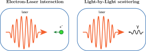

Критическое поле КЭД
$$E_{cr} = {m^2c^3}/{e\hbar} \approx 1.3\times10^{16}\ \text{В/м}$$ $$B_{cr} = {m^2c^3}/{e\hbar} \approx 4.4\times10^{13}\ \text{Гс}$$
Поле вблизи астрофизических объектов (нейтронные звёзды, пульсары, чёрные дыры)


Поле вблизи ядер тяжёлых атомов


Можно ли наблюдать нелинейные КЭД процессы в лаборатории?
Напряжённость ЭМ-поля не является Лоренц-инвариантом и может быть существенно увеличена в движущейся системе, связанной, например, с высокоэнергичной частицей.
Вероятности КЭД процессов зависят от Лоренц-инварианта $\chi$, являющегося по сути отношением поля в системе отсчёта частицы к критическому полю КЭД $$\chi= \frac{1}{E_{cr}mc}\sqrt{{\left(\frac{\varepsilon}{c}\mathbf{E+p\times B}\right)}^2-{(\mathbf{pE})}^2}$$
